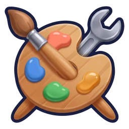
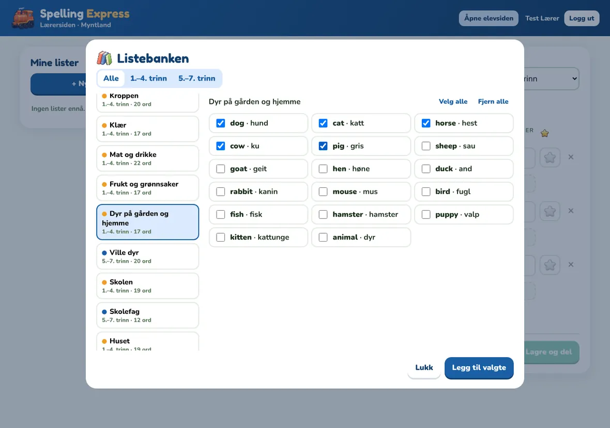
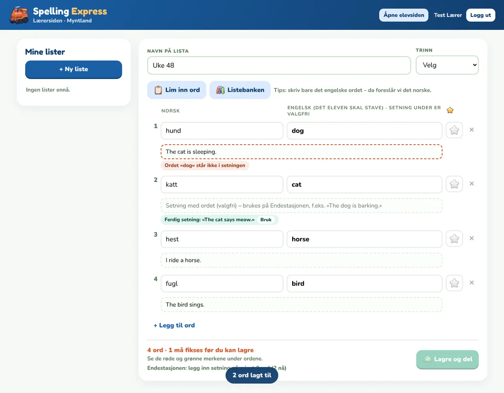
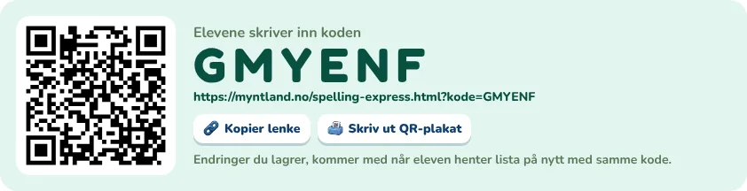
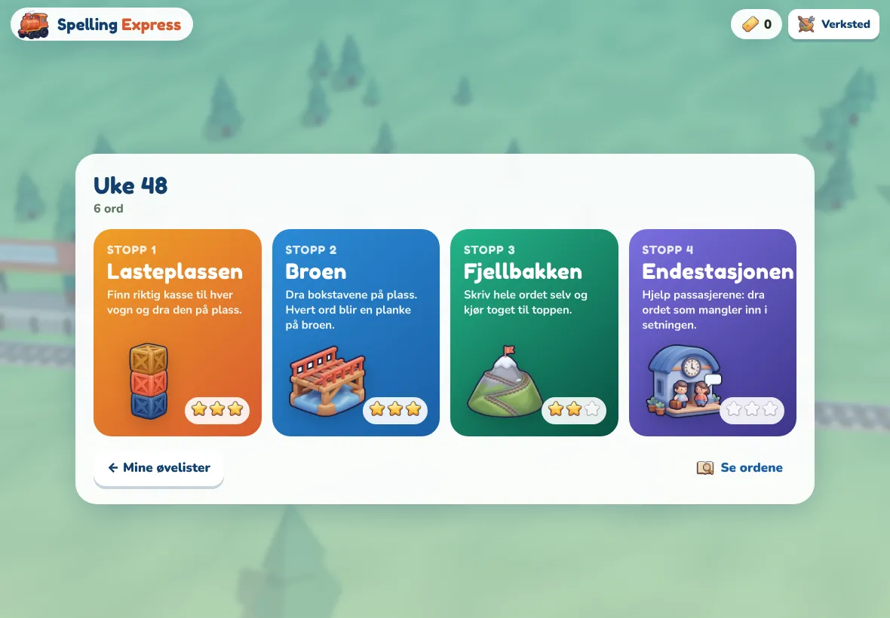
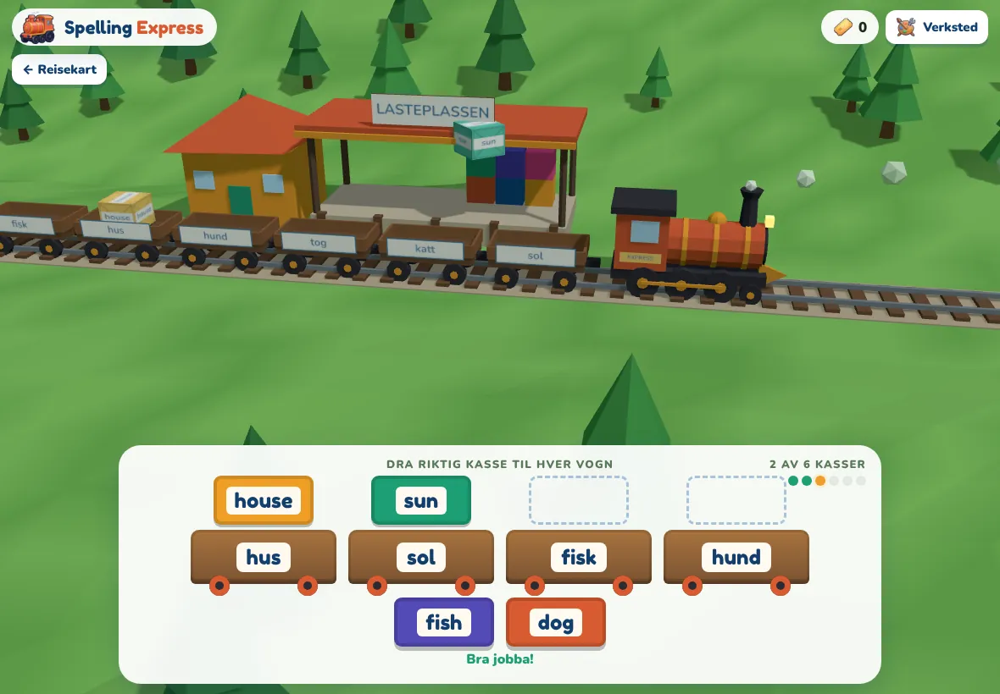
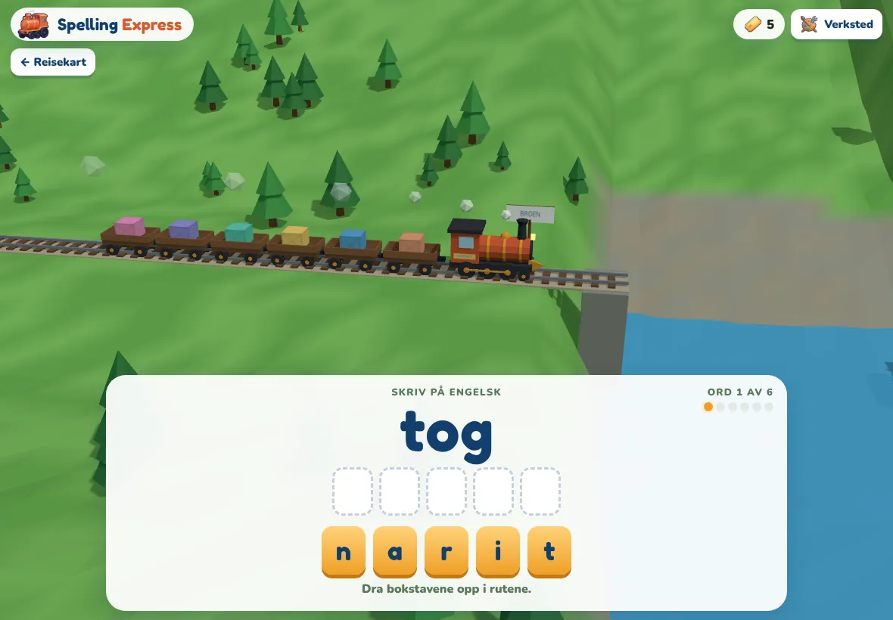
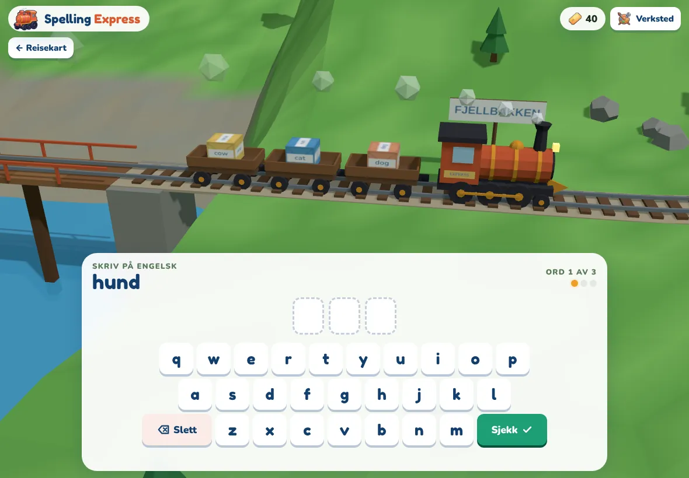
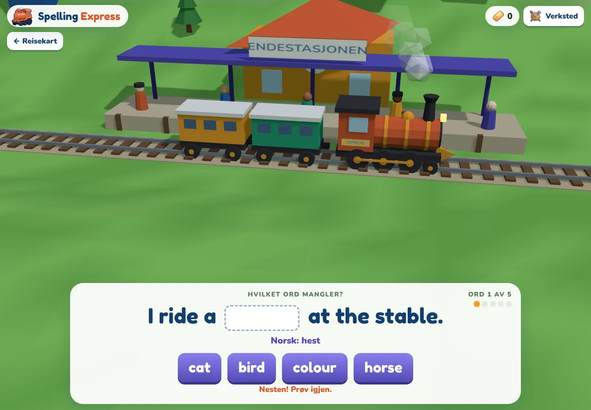
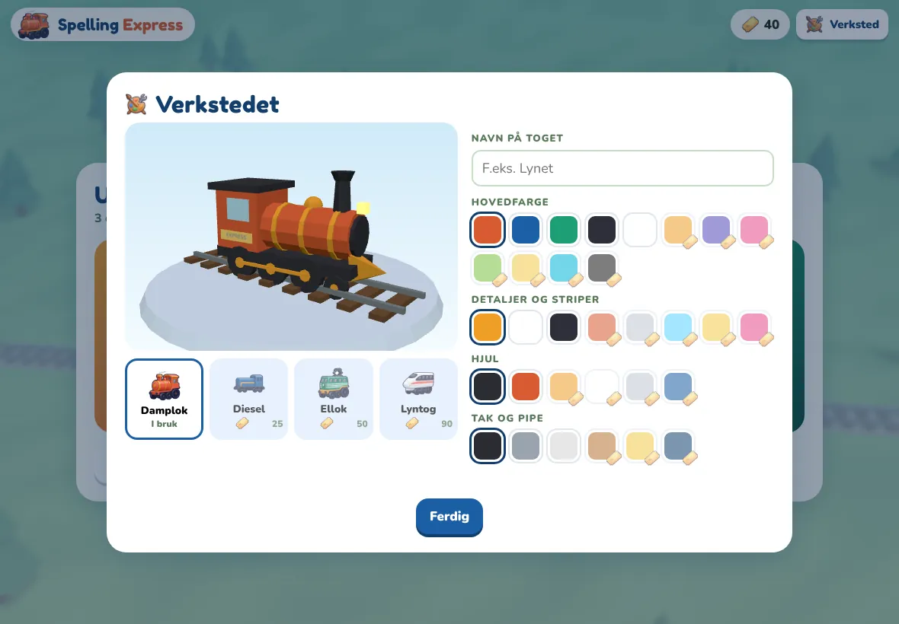

Hva er Spelling Express?
Hva er Spelling Express?
Spelling Express er et spill for å øve på engelske gloser og rettskriving. Læreren lager ukas gloseliste og deler den med en kode – elevene øver på sin egen iPad.
Hver liste blir en togreise med fire stopp. Stoppene bygger på hverandre, fra å kjenne igjen ordene til å stave dem selv og bruke dem i en setning:
| Stopp | Eleven øver på |
|---|---|
| 1. Lasteplassen | Koble det norske ordet til det engelske (gjenkjenne) |
| 2. Broen | Sette sammen ordet av bokstaver (stavemønster) |
| 3. Fjellbakken | Skrive hele ordet selv (aktiv staving) |
| 4. Endestasjonen | Velge riktig ord i en setning (forstå og bruke) |
Hvorfor det virker: Eleven møter de samme ordene mange ganger på ulike måter. Ord eleven bommer på, kommer tilbake senere i samme runde, slik at de vanskelige ordene får mest øving.
Spelling Express passer fra ca. 3. til 7. trinn. Listebanken har egne temaer for 1.–4. og 5.–7. trinn.

Kom i gang- Åpne lærersiden – myntland.no/spelling-express-laerer.html, eller kortet «Spelling Express» under lærerverktøy på forsiden av Myntland.
- Logg inn med Google eller med e-post og passord. Første gang trykker du «Lag ny konto». Har du glemt passordet, sender «Glemt passordet?» en lenke på e-post.
- Lag ukas liste og trykk «Lagre og del». Du får en kode på 6 tegn og en QR-kode.
- Gi koden til elevene. De åpner myntland.no/spelling-express.html på iPaden, skriver inn koden og er i gang.
Det er bare læreren som trenger konto. Elevene logger ikke inn og oppgir ingen opplysninger om seg selv.
Lage gloselister
Trykk «Ny liste», gi lista et navn (for eksempel «Uke 47 – Dyr») og velg trinn. Så fyller du inn ordene. Det finnes tre raske måter:
Skriv bare engelsk
Skriv det engelske ordet, så foreslår siden det norske. Trykk «Bruk». Det går også motsatt vei.
Lim inn
Lim inn fra ukeplanen, Word eller Excel. Én linje per ord, for eksempel dog – hund. Siden finner selv ut hva som er norsk og engelsk.
Listebanken
32 ferdige temaer – farger, dyr, skolen, uregelrette verb, jul og mye mer. Velg ordene du vil ha med.
Setninger
Under hvert ord kan du skrive en setning der ordet står. Ordene fra listebanken har ferdige setninger.

Listebanken: velg et tema, huk av ordene og trykk «Legg til valgte».
Siden passer på for deg
Mens du skriver, kontrollerer siden lista og viser små merker under ordene:
- Mulige skrivefeil: «Mente du because?» – trykk «Bytt» for å rette.
- Britisk og amerikansk staving: For ord som colour/color kan du godta begge med ett trykk.
- Ugyldige tegn: æ, ø, å og tall kan ikke være med i det engelske ordet.
- Setningen må inneholde ordet – ellers får du en rød melding.
- Doble ord og svært lange ord blir markert.

Røde merker må rettes før du kan lagre. Grønne merker er forslag du kan bruke.
Utfordringsord: Trykk på stjernen ved et ord for å gjøre det til et utfordringsord. Elevene velger selv om de vil øve på bare grunnordene eller alle ordene. Det gjør det lett å differensiere med én og samme liste.

Stopp 4 krever setninger. Endestasjonen blir med når minst tre ord i lista har en setning. Nederst på lærersiden ser du hvor mange setninger lista har.
 Dele med elevene
Dele med elevene
Når lista er lagret, får du alt du trenger for å dele den:

- Koden (6 tegn) – skriv den på tavla. Elevene taster den inn på elevsiden.
- QR-koden – elevene skanner den med kameraet på iPaden og kommer rett inn i lista.
- Lenken – legg den i Teams, Showbie eller ukeplanen.
- QR-plakat – «Skriv ut QR-plakat» gir et A4-ark med navn, kode og stor QR-kode.
Lista lagres under Mine øvelister på elevens iPad, så eleven kan øve på den igjen senere uten å skrive koden på nytt. Elevene kan også lage egne øvelister.

Endret lista etter at elevene har hentet den? Lagre, og be elevene skrive inn koden én gang til. Da får de den nye versjonen – stjernene de har fått, blir ikke borte.
Legg spillet på hjemskjermen: I Safari trykker eleven på del-knappen og velger «Legg til på Hjem-skjermen». Da får spillet eget ikon og åpnes i fullskjerm.
 De fire stoppene
De fire stoppene
Eleven ser stoppene på reisekartet. Hvert stopp låses opp når det forrige er fullført, og gir én til tre stjerner.

Lasteplassen
Vognene har norske ord, kassene engelske. Eleven drar riktig kasse til riktig vogn – fire om gangen.
Gjenkjenne
Broen
Eleven ser det norske ordet og drar bokstavene på plass. Hvert riktig ord legger en planke på broen.
Sette sammenFjellbakken
Eleven skriver hele ordet selv på et skjermtastatur. Toget kjører oppover for hvert riktig ord – og sklir litt tilbake ved feil.
Stave selvEndestasjonen
Passasjerene har en setning der ett ord mangler. Eleven drar riktig ord inn, og passasjeren går på toget.
Bruke i setning
Lasteplassen: riktig kasse på riktig vogn.

Broen: dra bokstavene på plass.

Fjellbakken: skriv ordet med skjermtastaturet.

Endestasjonen: hvilket ord mangler?
Når eleven svarer feil
- Første feil: «Nesten! Prøv igjen.»
- Andre feil: riktig svar vises, og ordet kommer tilbake litt senere i samme runde.
- På Endestasjonen kan eleven trykke «Vis hint» og se det norske ordet. Da teller ikke ordet som riktig på første forsøk.
- Bokstavene må dras på plass – det holder ikke å trykke. Det gir litt mer tid til å tenke.
Stjerner og verkstedet
Stjerner
Stjernene viser hvor mange ord eleven fikk riktig på første forsøk:
- 3 stjerner: minst 90 %
- 2 stjerner: minst 70 %
- 1 stjerne: stoppet er fullført
Billetter
Eleven får én billett for hvert ord som er riktig på første forsøk, og tre ekstra for en feilfri runde.

I verkstedet bruker eleven billettene på nye lokomotiver, farger og et eget navn på toget.
Det finnes fire lokomotiver: damplok, diesel, ellok og lyntog. Billettene er ikke koblet til myntene i Myntland.
Tips til undervisningen
Ukas gloser
Lag én liste per uke. Elevene tar Lasteplassen og Broen tidlig i uka og Fjellbakken og Endestasjonen mot slutten, før gloseprøven.
Stasjonsarbeid
Bruk spillet som én av stasjonene. Ett stopp tar typisk 5–10 minutter, så det passer fint inn i en rotasjon.
Lekse
Lenken fungerer også hjemme. Del lenken i ukeplanen, så kan elevene øve på samme liste.
Differensiering
Merk vanskelige ord som utfordringsord. Elever som trenger det, øver på grunnordene; de som vil ha mer, velger «Alle ord».
Gjennomgang på tavla
Åpne elevsiden på smartboardet og spill Lasteplassen sammen med klassen når nye ord introduseres.
Gode setninger
Lag setninger som gir sammenheng, så bare ett ord passer: «The dog is barking at the cat» er bedre enn «I like the dog».
Personvern
- Elevene har ingen konto og oppgir ikke navn eller andre opplysninger.
- Gloselistene inneholder bare ord og setninger – ingen opplysninger om elevene.
- Lærerkontoen lagrer navn og e-post for innlogging (Firebase Authentication).
- Listene lagres i Firebase i EU (Belgia). Den som har koden, kan lese akkurat den lista, men ingen kan bla gjennom andres lister. Bare læreren som eier en liste, kan endre eller slette den.
- Elevens framgang – stjerner, billetter og tog – lagres bare på elevens egen iPad, ikke på noen server.
- Ingen reklame og ingen analyseverktøy.
Siden ingenting lagres om elevene, skal ikke elevenes navn skrives inn i lister eller setninger.
Spørsmål og svar
Eleven ser ikke stopp 4 (Endestasjonen)
Stopp 4 vises når minst tre ord i lista har en setning. Legg inn setninger på lærersiden, lagre, og be eleven hente lista på nytt med koden.
Jeg har endret lista – får elevene endringene?
Elevene har en kopi av lista på iPaden. Be dem skrive inn koden én gang til, så får de den nye versjonen. Stjernene beholdes.
«Fant ingen liste med den koden»
Sjekk at koden er skrevet riktig. Koden bruker aldri bokstavene I og O eller tallene 0 og 1, så de kan ikke forveksles. Er lista slettet, virker ikke koden lenger.
Kan ordene ha mellomrom, bindestrek eller apostrof?
Ja. «ice cream», «t-shirt» og «o'clock» fungerer. Mellomrom og tegn vises ferdig utfylt, så eleven bare staver bokstavene.
Store bokstaver (Monday, English)?
Spillet bruker små bokstaver, så «Monday» blir «monday». Snakk gjerne med elevene om at ukedager og språk skrives med stor bokstav på engelsk.
Britisk eller amerikansk staving?
For ord som colour/color, favourite/favorite og grey/gray foreslår lærersiden å godta begge. Da er begge riktige når eleven skriver selv.
Eleven har fått ny iPad – er framgangen borte?
Framgangen ligger på iPaden. Lista hentes enkelt igjen med koden, men stjerner og billetter starter på nytt.
Kan to lærere dele samme liste?
Koden kan brukes av alle elever, også i andre klasser. Bare læreren som laget lista kan endre den. Vil en kollega ha sin egen versjon, kan de lime inn ordene i en ny liste på sin egen konto.
Fungerer det uten internett?
Eleven trenger nett for å hente en liste og åpne spillet. Selve spillingen krever bare at siden er lastet.
Spelling Express er en del av Myntland · myntland.no